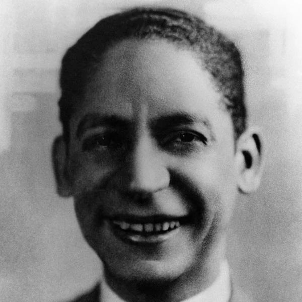
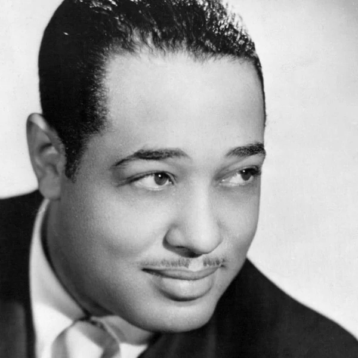
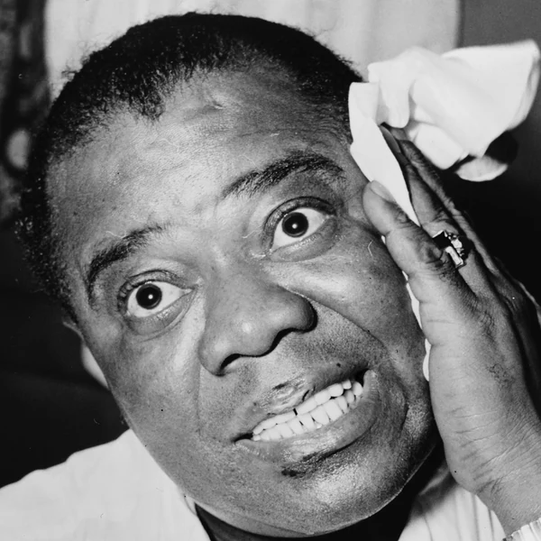
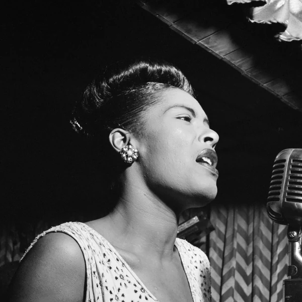
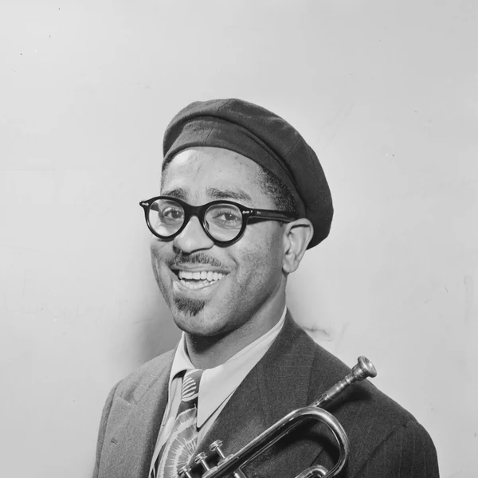
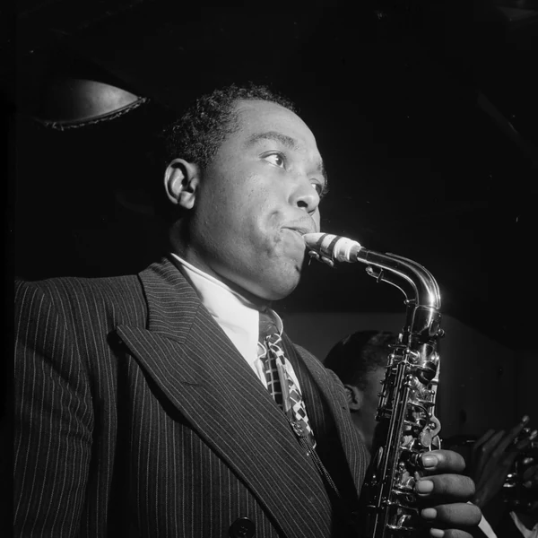
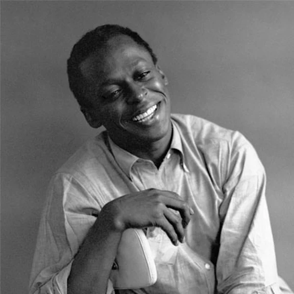
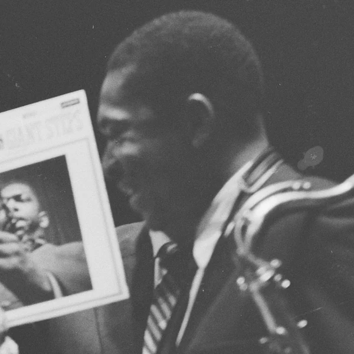

Jazz grew out of Black American musical traditions around the beginning of the 20th century, with New Orleans playing a central role in its early development. It began largely as music for dancing, although it has since become just as familiar in concert halls and smaller listening venues. What makes Jazz distinctive is the way musicians can work with a piece without treating every performance as a fixed copy of the last one. A group might start with a familiar melody, then give individual players room to change its phrasing or take the music somewhere unexpected. The others have to listen and respond, sometimes in the middle of a performance. This improvisation is important, but Jazz also includes music that is carefully composed and arranged. Its styles vary enormously, yet the interaction between the players remains one of the most recognisable parts of the tradition.
Nobody knows for certain where the word Jazz came from, although people have been proposing confident explanations for more than a century. The earliest widely documented uses appeared in American slang and sports writing in the early 1910s, before the word became associated with music. It suggested energy or excitement, which made it a convenient label for the lively dance bands attracting attention at the time. Early versions of the name were sometimes written as jass. Some researchers have linked the word to older slang, but its exact route into music has never been settled. By the 1920s, Jazz was firmly established as the name of a musical style. The music has changed almost beyond recognition in some directions since then, but the name has managed to stick.
Jazz was taking shape in New Orleans at the turn of the 20th century, when Black musicians were developing new ways of playing dance music. Brass band traditions were already part of everyday community life, while Blues and Ragtime influenced the rhythms and melodies musicians brought into their performances. Early Jazz often involved several instruments improvising together, rather than waiting for one featured soloist. As performers travelled north and recordings became more widely available, the music reached Chicago and New York. In the 1930s, Swing orchestras brought Jazz to enormous dance audiences. During the 1940s, Bebop offered a more demanding approach built around small groups and adventurous improvisation. Later musicians moved towards modal harmony and Free Jazz, while others explored connections with Rock and electronic music. None of these developments completely displaced what came before. Jazz is still played as dance music, as carefully arranged ensemble music and as open experimentation, sometimes within the same local scene.
Jazz often starts with an arrangement that everyone in the group understands, even if the audience never hears it played exactly the same way twice. A melody and its chord changes can provide the framework for improvisation, allowing musicians to develop ideas without losing their place in the music. The rhythm can be just as flexible. Swing gives many Jazz styles their characteristic uneven pulse, while syncopation moves accents away from where a listener might expect them. The rhythm section usually holds the performance together, but that does not mean the other players simply take turns over a fixed backing. They can interrupt a phrase, answer it or change direction together. Some forms of Jazz use quite detailed written arrangements, while others leave far more to chance and quick decisions. There is no requirement for every Jazz piece to swing, feature a solo or even use a familiar set of instruments. Listening to how the musicians interact usually tells you more than checking off a list of sounds.








Jazz became a major part of American popular culture while the country was still enforcing racial segregation. That produced an uncomfortable contradiction. Black musicians could be celebrated on stage and denied equal treatment when they stepped off it, and some venues that profited from their work did not welcome Black audiences. Early Jazz also unsettled people who regarded its dancing and nightlife as a threat to respectable behaviour. Its popularity did not end discrimination, but it brought Black musical innovation into public life on a scale that could no longer be ignored. Jazz later became connected with Civil Rights activism and debates about who receives credit for shaping American culture. Its influence also travelled abroad, where musicians built their own scenes rather than simply reproducing an American model. Women helped shape Jazz throughout its history, despite facing barriers to recognition and professional opportunities. The music changed what people expected from performance, even when the institutions selling it were slower to change.